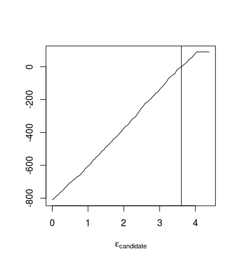
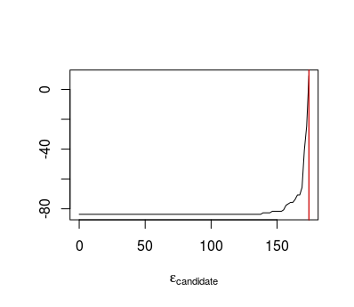
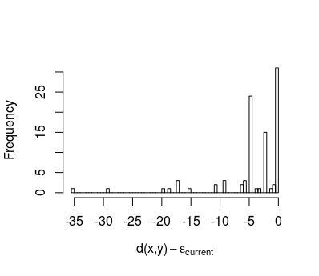

- $p(\boldsymbol{\theta}|\boldsymbol{y})\propto p(\boldsymbol{y}|\boldsymbol{\theta})p(\boldsymbol{\theta})$
- $\boldsymbol{\theta}$ are parameters of some model
- $\boldsymbol{y}$ is observed data
- $p(\boldsymbol{\theta}|\boldsymbol{y})\propto \color{red} p(\boldsymbol{y}|\boldsymbol{\theta})\color{black}p(\boldsymbol{\theta})$
-
Likelihood
- $p(\boldsymbol{\theta}|\boldsymbol{y})\propto \color{red} p(\boldsymbol{y}|\boldsymbol{\theta})\color{blue}p(\boldsymbol{\theta})$
-
Likelihood
-
Prior: Prior knowledge
Posterior
- Potentially difficult to find distribution
MCMC methods
- Popular method for sampling from arbitrary distribution
- Need to evaluate likelihood
Approximate Bayesian Computation
- Approximation to distribution without evaluating likelihood
- Likelihood-free methods
Problems
- Finding statistics
- Computational resources
- Method we present here requires many samples from approximation to likelihood
Sequential Monte Carlo
- Idea is to split problem of sampling $w(\boldsymbol{x})=\frac{p(\boldsymbol{x})}{g(\boldsymbol{x})}$ into substeps
- $w(\boldsymbol{x})=\frac{p(x_{1})p(x_{2}|x_{1})p(x_{3}|x_{1},x_{2})...p(x_{k}|x_{1},...,x_{k-1})}{g(x_{1})g(x_{2}|x_{1})g(x_{3}|x_{1},x_{2})...g(x_{k}|x_{1},...,x_{k-1})}$
Weight degeneracy
- Weights will spread out
- Small number of particles can dominate
Possible remedy
- Introduce resampling step
- Triggered by ESS
- Our definition:$$\frac{1}{\sum_{i=1}^{n}w_{i}(\boldsymbol{x})^{2}}$$
SMC in ABC
- Focus is on an algorithm developed by Del Moral et. al.
- Algorithm uses what is called an SMC sampler developed by Del Moral et. al.
Resampling schedule
$\mathrm{ESS}(w(\boldsymbol{x}_{i}))=\alpha\mathrm{ESS}(w(\boldsymbol{x}_{i-1}))$

Simple mixture
- $p(\theta|x)\sim(\mathrm{N}(\theta,1)+\mathrm{N}(\theta,\frac{1}{100}))\mathrm{I}_{[-10,10]}(\theta)$
- $d(x,y)=|x-y|$
- Single observation at $y=0$
No replicates
5 replicates
20 replicates
MA(2) process
- Example used in Marin et. al. (2012)
- $z_{t}=a_{t}-\theta_{1}a_{t-1}-\theta_{2}a_{t-2}$
- The task is to provide estimates for $\boldsymbol{\theta}$
- Prior is chosen to be uniform on region that makes the process invertible
- There is a closed expression for the likelihood
Setups
- Trying two different statistics
- In all cases a time series of length 100 is generated, and this is used as the observation
Autocovariance distance
- Using measure of autocovariance as statistic
- $d=\frac{1}{n}\left(\sum_{i=2}^{n}\left(x_{i}x_{i-1}\right)-\sum_{i=2}^{n}\left(y_{i}y_{i-1}\right)\right)^{2}\\ +\frac{1}{n}\left(\sum_{i=2}^{n}\left(x_{i}x_{i-2}\right)-\sum_{i=2}^{n}\left(y_{i}y_{i-2}\right)\right)^{2}$
Autocovariance distance
Raw distance function
- $d=\sum_{i=1}^{n}\left(x_{i}-y_{i}\right)^{2}$
Raw distance function
- Same settings as in previous example
What happens when it gets stuck?
Note: Data from a different example


Raw distance function
Raw distance function
- $\alpha=0.9$, 5 replicates
- Bug
Raw distance function
- $\alpha=0.9$, 5 replicates
- Fixed